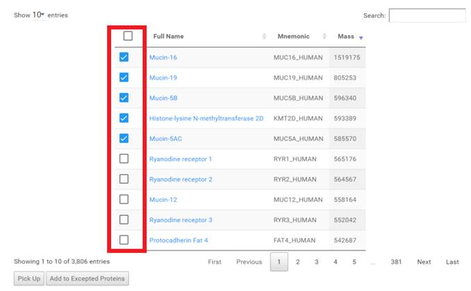
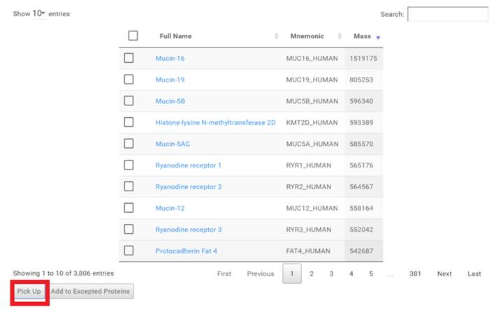
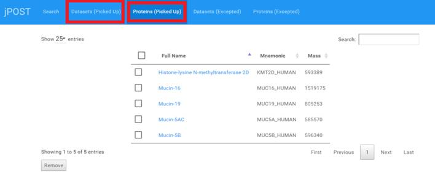

指定した Dataset, Protein をピックアップ項目に追加する。
テーブルでピックアップしたい項目をチェックします。

[Pick Up] ボタンを追加します。

トップメニューの [Datasets (Picked Up)], [Proteins (Picked Up)] を選択すると、ピックアップした、Dataset もしくは Protein の一覧を確認する事ができます。
